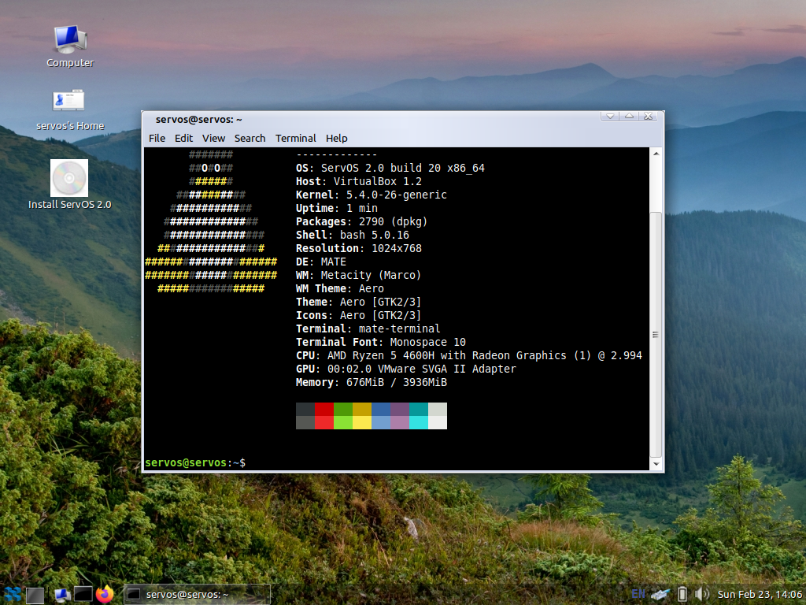

ServOS
Discription:
ServOS is operate system, which was created for servers. The operate system is analog of Windows Server whith using Linux core.
Gallery:
Requirement:
Minimum:Drive: 32 GB
RAM: 1 GB
CPU: 1 CPU
Type of proccesor: 64-bit (x64)
VRAM: 16 MB
Drive: 64 GB
RAM: 4 GB
CPU: 2 CPU
Type of proccesor: 64-bit (x64)
VRAM: 128 MB (With 3D Acceleration)
Installed software:
- News
- Dashboard
- Media Center
Mail Client: Mozilla Firefox
Browser: Mozilla Thunderbird
Office package: LibreOffice
Multimedia viewer: Media Center
Code editor (IDE): Coder
Programs of OrgInfoTech: